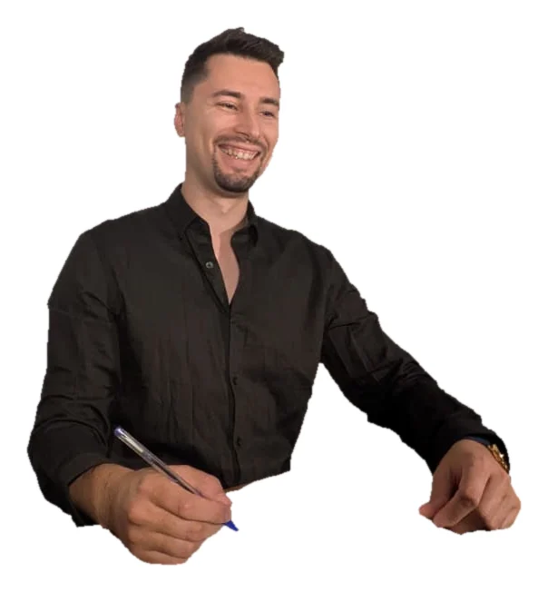

Ça plafonne
- Ton activité stagne ou recule.
- Tu recrutes peu, par choix ou par contrainte.
Objectif
Gagner en rentabilité avec l'équipe que tu as déjà.
Que tu vises la croissance ou non.J'installe avec toi les rôles, les indicateurs et les process qui te rendent de la marge et du temps.
Bras droit|COO freelance
« Grâce à lui, nous avons gagné en productivité, en visibilité sur nos projets, et en efficacité globale. »Nicolas, CEO de Codaza, client
Si c'est le cas, c'est tout à fait NORMAL.
Tu as construit ta boîte autour de toi, parce que c'était la seule façon de la lancer.
Aujourd'hui, elle a besoin d'une organisation qui tienne sans que tout passe par toi.
Deux cas de figure, deux objectifs.
Gagner en rentabilité avec l'équipe que tu as déjà.
Que tu vises la croissance ou non.Mais
Structurer ton organisation pour tenir la croissance.
Cinq leviers. On démarre par celui qui coince le plus chez toi.
Tu hésites sur le point de départ ? On en parle.
Réserver un échange de 30 minQuand l'accompagnement correspond à ta situation, les résultats sont meilleurs pour tout le monde autour de la table.
Nous parlons de ta situation et de tes objectifs, sans engagement.
État des lieux de six dimensions : vision, humain, données, gestion des problèmes, process et suivi de l'exécution.
Un problème sélectionné → cadrage de la mission.
2 semaines
Outils concrets, formation, accompagnement au changement.
Évaluation des résultats et documentation de la solution.
Axel a été un véritable atout pour Codaza. Il m'a accompagné dans la mise en place d'une stratégie claire et efficiente pour l'entreprise, en allant bien au-delà du simple conseil. Il s'est impliqué concrètement dans le déploiement du plan d'actions, avec un vrai souci du détail et une excellente compréhension des enjeux internes. Grâce à lui, nous avons gagné en productivité, en visibilité sur nos projets, et en efficacité globale. Il agit comme un bras droit, en immersion totale dans l'entreprise, avec une approche à la fois humaine, structurée et impactante.

Avant de me mettre à mon compte, j'ai managé des équipes en grande distribution, puis dirigé les opérations d'un groupe multi-sites présent dans deux pays.
Je suis un sparring partner pour les chefs d'entreprise : je les challenge pour faire avancer les choses, et je m'intègre à l'équipe le temps qu'il faut.
Basé près de Lyon, j'interviens partout en France, sur place ou à distance.
17 questions, 5 minutes. Tu reçois par email ton score sur 100, ton profil et la dimension la plus faible de ton organisation, puis je te propose un échange gratuit de 30 minutes.
| Accompagnement COO externalisé | 160 € / heure |
| Atelier | à partir de 800 € la demi-journée |
| Process automatisé et IA clé en main | à partir de 1 000 € |
| Échange de découverte | 30 min, gratuit |
Une mission type dure 90 jours, à raison de 1 à 2 jours par semaine. La durée dépend de ton besoin et de ton budget : la mission peut se prolonger, et une nouvelle mission peut s'enchaîner ensuite.
Je m'entretiens avec toi et tes responsables, j'observe vos réunions et je passe en revue tes process, tes outils et tes indicateurs. Tu reçois un audit écrit et un plan d'action priorisé.
Un rituel de pilotage, des process documentés, des rôles clairs, un tableau de bord, et un plan pour les 6 à 12 mois suivants.
Un diagnostic écrit à 30 jours, des améliorations visibles, un pilotage qui tourne, et une équipe autonome après la mission.
Une charte courte fixe le périmètre, les décisions que je peux prendre, le budget, les indicateurs visés, le reporting et les modalités de sortie.
Il dépend de l'ampleur du travail.
Je travaille justement avec des chefs d'entreprise à la tête d'une équipe de 3 à 15 personnes, trop petite pour recruter un bras droit à temps plein. Tu fais appel à moi pour le volume d'heures dont tu as besoin.
Je m'intègre à ton équipe et je travaille sur tes vrais dossiers : fiches de poste, organigramme, tableaux de bord, plan d'action. Je reste disponible après la mission, avec un suivi jusqu'à 12 mois.
Partout en France, sur place ou à distance. Je suis basé près de Lyon.
Ce sont trois noms pour le même rôle : un bras droit qui pilote les opérations de ton entreprise, pour une partie de la semaine seulement.
Nous regardons ce que révèle ta situation, les points de levier prioritaires, et si et comment je peux t'accompagner concrètement. C'est gratuit et sans engagement.
Bras droit du dirigeant : recruter un directeur des opérations ou faire appel à un COO externalisé ? Les critères pour choisir.
Lire l'articleMon profil INTJ, ce qu'il apporte à un dirigeant, et pourquoi le bon bras droit couvre tes angles morts plutôt que de te ressembler.
Lire l'articleSi le travail ralentit quand tu n'es pas là, tu es sans doute le goulot d'étranglement. Les signaux, deux tests simples et quoi faire en premier.
Lire l'article